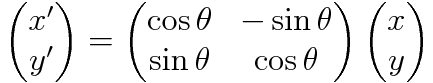

第, counter(5.28469e-308), '回 '応用プログラムの作成
乱数の利用
ゲームをより面白くするコツの一つとして乱数を用いる方法がある。 乱数とはある確率で、相互にまったく独立になるように作られた一群の数である。コンピュータで使われる乱数は、通常はある初期値から始まり、順次ある関数を繰り返して生成される。このような方法で得られる数列は、でたらめに見えるが本当の意味では乱数ではないため疑似乱数と呼ぶ。
C 言語において疑似乱数を利用する方法の一つとして、rand 関数が挙げられる。rand 関数を利用するためには stdlib.h をインクルードしなければならない。srand 関数は乱数生成の初期値を決めるものである。srand 関数の引数が同じ値であれば rand 関数は同じ乱数列を出力する。下記の例では異なる乱数列が欲しいため時刻を初期値としている。なお、time 関数を用いるには time.h をインクルードする必要がある。また、通常は特定の範囲の整数の乱数を得る事が多い。例えば 52 枚のトランプから一枚ランダムに抜き出すには 1 から 52 までの乱数が欲しい。下記の例では rand 関数で得られた値を 52 で割った余りを用いてそれを実現している。
1 2 3 4 5 6 7 8 9 10 11 | #include <stdio.h>
#include <stdlib.h>
#include <time.h>
void main(void) {
int i;
srand((unsigned)time(NULL));
for(i=0; i<100; i++) {
printf("%d\n",rand()%52+1);
}
}
|
なお、上記の方法で生成された乱数には周期性が出てしまうなどの欠点がある。実用上の乱数として改善されたものにメルセンヌ・ツイスタ法による乱数生成がある。ゲームによって上記の乱数では不十分の場合にはメルセンヌ・ツイスタなどの改良された乱数を用いることをお薦めする。
練習問題 ', counter(8.01033e-307), '-', counter(1.37962e-306), ' トランプゲームの作成
- ジョーカーなしのトランプ（スペード・ダイヤ・クローバ・ハートの A, 2, 3, 〜, J, Q, K）を構造体 or 配列を用いて実装せよ。
- 上記のデッキからシャッフルして 1 枚カードを抜き出しカード名を表示せよ。
- (チェック問題)
以下のカードゲームのうち一つを実装せよ。
[条件]
- 実行したら 1 回以上遊べるようにせよ。
- 同じカードが重複して選ばれることがないようにすること。
[カードゲームの例]
- ハイ・アンド・ロー
まずカードを一枚めくり、次にめくられるカードの数字が大きいか小さいかを当てるゲーム。何回当て続けられるかを競う。 - ブラック・ジャック
絵札は 10、A は 1 か 11 として数え、より内和が 21 に近くなるようにカードを引いていくゲーム。親側の実装は必須としない。 - ポーカー
5 枚ランダムに抽出し、一回だけ交換して、配役があるかどうかを判定するプログラム。親側の実装は必須としない。 - その他
参考: 2 次元の座標変換
第 9 回のサンプルコードに、画像を平行移動するものがあった。点 (x, y)T
を (tx, ty)T
だけ平行移動した点 (x', y')T
は次のように計算できる。
自作ゲームではもっと複雑な動きをさせたいかもしれない。ここではこれ以外に、回転、拡大縮小、せん断変形という座標変換を紹介する。これらの座標変換は、原点を中心として変換する場合、2×2 行列を掛けるだけで実現できる。
回転
x 軸を反時計回りに角度 θ (ラジアン単位) だけ、原点を中心に回転させるには、次のように 2×2 行列を掛ける。

拡大縮小
原点からの長さを、x 方向に a 倍、y 方向にするには次のように 2×2 行列を掛ける。
せん断変形
原点を基準として、平行四辺形のように x 方向に歪めるには、sx
を定数として次のように 2×2 行列を掛ける。
同様に、y 方向に歪めるには、sy
を定数として次のように計算する。
アフィン変換
ここまで紹介した、回転、拡大縮小、せん断変形および、それらを合成した座標変換をアフィン変換という。上記の座標変換を合成するには行列を並べて掛ければよい。例えば、最初に拡大縮小し、次にせん断変形して、最後に回転を加えるなら次のような 2×2 行列 M を座標 (x, y)T
に掛ければよい。座標変換の順番と行列を掛ける順番に注意すること。
原点以外の点を基準としたアフィン変換
上記のアフィン変換は原点を基準点とした座標変換であった。任意の点 (p, q)T
を基準点として点 (x, y)T
にアフィン変換を適用するには、次のように計算すればよい。
- (x, y)T
から (p, q)T
を引いて、(p, q)T
を原点とする座標系の点 (x1, y1)T
に移す。
- (x1, y1)T
にアフィン変換行列 M を適用し、(x2, y2)T
を得る。
- (x2, y2)T
に (p, q)T
を足して、元の座標系に戻す。
これらをまとめると次の式のようになる。
OpenGL を使った座標変換
座標変換は上記の数式を自分で計算するのが手っ取り早いが、OpenGL (の古い関数) を使って座標変換を行うこともできる。詳しくは 2 年次向けの講義
「コンピュータグラフィクス基礎」の「第 2 回 : 座標変換（2 次元）」の資料を参照してほしい。